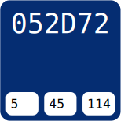

Golden Brown - I'll use this for the breadcrumbs of my website under the navigation bar.Magenta - This will be the color of the navigation bar at the top of the page.

Blue - This will be the background color of the website, styled with a linear-gradient to give it an ombre effect.Medium Cyan - The footer will be in this color.Dark Cyan - The border of the content, including images, videos and text will be this color.